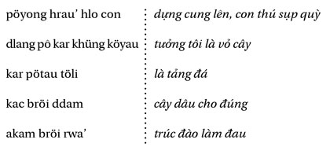
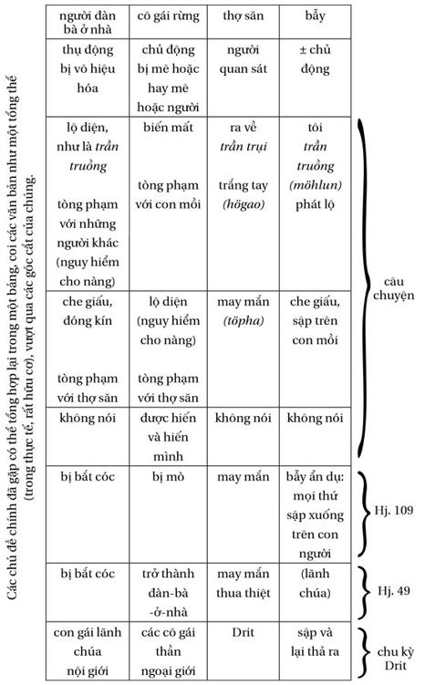

Chương 11
Bây giờ sẽ chủ yếu là chuyện người thợ săn, cuốn sách bơi ở ven bờ cõi mơ tưởng - như một nội hàm mà nó tìm cách đi giáp vòng.
Trong số những nhân vật huyền thoại nam đã gặp, ngoài Drit, là nhân vật chính, người đi săn - người thu góp, còn có Diung ( Hj. 20 ) người bẫy chim và đi săn, chiến binh thứ yếu, có một nhân vật gần (ít nhất là cũng về tên) là Giung, một con người của rừng, mà ta sẽ gặp lại ( Hj. 114 ). Không ai trong số này rõ ràng là mögap , thợ săn chuyên nghiệp, dùng cung hay bẫy, nghĩa là đi săn một mình, vì đã quen với rừng, mà anh chẳng còn có gì phải sợ. Trái lại, huyền thoại đầu tiên (Hj. 49) trình bày về một người thợ săn thực sự. Sau đây là những người khác, người đầu tiên được kể ra có phần là thầy bói.
Một mögap đi săn. Anh ta ở gần ngôi làng nơi có một người đàn bà đang sinh. Anh ta nghe yang but [các thần chủ trì số mệnh con người] nói như sau: “Con của người ấy là con gái. Khi nó lớn thành con gái vú nhọn, nó sẽ chết”. Người thợ săn vào nhà nọ, anh ta “đo” [theo nghi thức] tuổi thọ của đứa con gái, vì anh đã biết, và anh xin cưới nó.
Về sau, họ trở thành vợ chồng. Làng bị cháy, đôi vợ chồng trẻ thu gom tất cả đồ đạc và xếp vào trong kho, xa các nhà. Khi người đàn bà trẻ trở về vác chiếc cối gạo trên vai, chị ta gặp một con hổ; nhưng người chồng biết và đã chờ nó. Anh ta giết chết con hổ, và tin như vậy là vợ mình đã được cứu khỏi số phận dành cho nàng. Anh ta nhổ các móng vuốt của hổ, xếp vào trong nhà, gắn trên mái tranh, phía đông [trong nhà, trục chính theo hướng bắc nam, người ta nằm quay đầu về hướng đông và chân về hướng tây].
Đêm ấy, người vợ trẻ nằm ngủ, ngay dưới các móng hổ. Móng hổ rơi trúng vào vú nàng; nàng chết ngay (Hj. 81b).
Người Êđê kể một câu chuyện gần giống như vậy - là điều chẳng có gì lạ đối với các tộc người láng giềng, cùng thuộc ngữ hệ Nam Đảo:
Một người thợ săn ngủ dưới một cây đa. Anh ta nghe thần cây đa bảo: ở làng bên cạnh, có một đứa con gái mới sinh ra; khi lớn lên, cô ta sẽ có thai, sẽ bị một con hổ vồ, sau khi bỏ quên cái cối, lúc dời làng. Người thợ săn đến nhà người mẹ mới sinh, hứa sẽ cưới cô gái, mong cứu cô khỏi số mệnh, bởi vì anh ta đã biết - Họ lấy nhau; làng phải dời vì bệnh dịch - Mang cung và gươm, anh thợ săn không rời vợ; chị quên cái cối; chị quay lại lấy; một con hổ xuất hiện, người thợ săn chém cổ nó - Người thợ săn gắn các móng hổ lên mái, trên chỗ vợ anh quen ngồi dệt cửi - kéo cái khung cửi, chị làm rơi các móng hổ, đúng vào bụng, bị thương; và chết. (theo B.Y. Jouin, “Recherches ethnographiques: Croyances et rites des Rhadés” (Nghiên cứu dân tộc học: Tín ngưỡng và lễ thức Ê Đê), Giáo dục , Saigon, 1949).
Người Sre, là tộc người Nam Á, ở khá xa, kể một câu chuyện tương tự:
Một người đàn bà sinh một đứa con gái. Một cà’ (phù thủy xấu, chuyên phù phép hại người) đứng gần đó, đã muốn thèm hút lấy sinh khí của cô bé. Cầm một cây giáo trong tay nó bói. “Nó sẽ chết bệnh?” Nó ném cây giáo vào một cột nhà; cây giáo rơi xuống. “Nó sẽ chết đói... chết thuốc độc?” Cây giáo rơi xuống. “Nó sẽ chết vì hổ trong khi đi tìm cái cối?” Cây giáo cắm vào cột. Cà’ rú lên sung sướng. Có một chàng trai trẻ nấp bên ngoài nghe thấy tất cả. Cà’ đi rồi, chàng vào nhà, xin cưới cô bé làm vợ. “Sao vậy được? Nó mới vừa sinh mà! - Tôi xin trao cái vòng này làm bằng”. Khi cô gái lớn lên, chàng cưới cô. Về sau họ chuyển nhà; còn một cái cối gạo phải mang đi. Người đàn ông đi theo vợ, tay cầm giáo, tay kia cầm gươm, dao quắm trên vai. Khi người đàn bà vừa vác chiếc cối lên vai, một con hổ nhảy xổ vào. Người chồng lấy gươm chém nó, lấy giáo đâm, giết hẳn nó bằng dao quắm. Chàng đã thắng được cái mệnh xấu, họ trở về nhà. Người đàn bà chết bình yên, lúc đã già, khi không còn máu trong các huyết quản (Hs. 88).
Đấy không phải là những “dị bản”, vì các tộc người có ngôn ngữ khác nhau, mà đúng hơn là những cách “chuyển thuật” của một chủ đề chung. Chủ đề ấy đến từ đâu vậy? Người Giarai (Nam Đảo) và người Sre (Nam Á) đều chịu ảnh hưởng của người Chàm (Nam Đảo), trong khi người Êđê (Nam Đảo) chịu ảnh hưởng của người Khơme (Nam Á) - điều đó không đơn giản hóa vấn đề; nhưng hằng số, hiển nhiên, có thể đến từ một cái vốn chung cho cả người Nam Đảo lẫn Nam Á, trước mọi ảnh hưởng của các quốc gia Ấn Độ hóa Khơme và Chàm. Dầu sao đi nữa, ta có thể tùy ý nêu lên ở đây sự đối lập giữa cái biết của thợ săn và số mệnh - hoặc là được người mögap (Giarai và Êđê) biết, hoặc được người Sre (không phải thợ săn) biết một cách tình cờ; trong hai trường hợp đầu, người thợ săn phải thua số mệnh (vì đó là vợ anh ta), trong mọi trường hợp, người đàn bà đều bị sa bẫy.
Là nhân vật chính của một huyền thoại, kể ghi âm dài đến năm giờ và phải ghi ra mất gần một trăm trang đánh máy, anh chàng Dièr hùng mạnh không phải là thợ săn thú, mà là kẻ chuyên đi mò gái đẹp; các con của anh ta thì là những thợ săn giỏi. Người đàn bà, vợ và mẹ, vẫn còn bị sa bẫy.
Dièr hùng mạnh rất giàu, thóc đầy kho, anh ta đẹp trai và sang trọng - Ông Ködei già (= Adei, Ông Trời), tóc bạc bù xù, chẳng có gì ăn; bà vợ già của ông mắng vì ông cứ ngủ suốt - Biết Dièr giàu có và lanh lợi, ông bà Ködei xuống trần, đến làm khách ở nhà Dièr, chè chén thỏa thuê - Biết Dièr chưa có vợ, họ gạ Dièr làm rể; nghĩa là anh ta phải đến ở nhà họ - Dièr chỉ chấp thuận trong trường hợp nàng Tlaktlo tuyệt trần, con gái của họ, chịu xuống ở nhà anh ta - No và say mèm, đôi vợ chồng Ködei trở về trời - Đến lượt Dièr hùng mạnh lên thăm họ, anh ta xin cưới con gái họ và đưa về nhà mình; sau khi đã vượt qua các thử thách, anh được chấp thuận - Dièr trở về nhà cùng với nàng Tlaktlo, nhưng anh ta ruồng bỏ nàng - Thân thể anh nằm ở nhà, hồn (böngat) anh lên trời, ở đó anh mò một cô gái đẹp - Trong khi đó Tlaktlo sinh hai cậu con trai.
Còn rất bé, các cậu đã muốn đi săn; các cậu lấy cung, túi tên, và bầu nước dự trữ; các cậu bắt được bao nhiêu là chim, thằn lằn, cầy hương - Trong khi Dièr đi vắng, anh ta vẫn ngủ nhưng lại đi ve gái, và các con anh ta đi săn, lãnh chúa Kiến hùng mạnh đến nhà Tlaktlo, nói với nàng, xin nước uống; nàng mang ra hiên cho y nước, thuốc lá và lửa - Lãnh chúa bắt cóc nàng Tlaktlo xinh đẹp, mang về nhà - Các cậu con đi săn về, tìm mẹ ở nhà; chim bảo cho các cậu hay mọi chuyện, Kodei gửi xuống cho các cậu thuốc mê (jörao cörèk cörul) cùng với kiếm và khiên, trong khi ở trên kia người cha vẫn tiếp tục tán gái và uống rượu - Các cậu con trai đánh lãnh chúa, giải thoát cho mẹ, vội bú mẹ, đưa mẹ về nhà.
Trang bị đầy đủ, các thợ săn trẻ lại lên đường vào rừng; các cậu bắn bò, tê giác, voi - Lãnh chúa Mối bắt cóc mẹ - Đi săn về, các cậu con chiến đấu và lấy lại mẹ.
Các cậu con trai săn ma-mút và dã thú - Lãnh chúa Sét bắt cóc mẹ - Các cậu đi đánh nó; gặp khó khăn; Dièr hùng mạnh, không hề động tay khi anh ta biết các con còn mạnh hơn, bấy giờ anh ta mới rời các cô gái và tỉnh dậy; anh ta giết chết lãnh chúa, lấy lại vợ mình, lại đi làm rẫy; các con anh ta lại đi săn (Hj. 109).
Cần có cả một cuốn sách riêng cho thiên huyền thoại-anh hùng ca này. Tôi chỉ nêu lên đôi chi tiết, để cuối cùng giữ lại những gì cần dùng sau này.
Như không hiếm thấy trong các huyền thoại, nhân vật Ông Trời được biểu hiện lố bịch, một ông hề già nhân từ, trong khi trong đời sống nghi lễ của xã hội Giarai, người ta rất kính sợ và sùng bái ông; đối với các lãnh chúa ( pötao ) của huyền thoại cũng vậy, là những kẻ thù phải đánh bại, trong khi các pötao linh thiêng được mọi người kính trọng. Chúng ta biết rằng thể loại văn học truyền khẩu này không phản ánh đời sống xã hội; cái tưởng tượng không phải là cái sống, ở đây chính cái thứ nhất mới quan trọng.
Anh chàng Dièr hùng mạnh được nhìn thấy ngủ ở nhà, trên chiếc võng của anh ta, và, đồng thời, lại “mò gái” ( pöyu , có nghĩa là “làm tình”) với các cô gái đẹp ở chốn thiên triều. Vẻ ngoài nhìn thấy được của nhân vật vẫn ở nhà, trong khi “cái tôi” của anh ta lại ra đi. Đấy là điều diễn ra một mặt trong giấc mơ và, mặt khác, trong chuyến du hành thầy pháp, sẽ nói đến (trong quyển III). Như vậy, Dièr ở chỗ các cô gái nhà trời, các cô gái- yang , rất gần với các cô gái-rừng, nhất là họ đều mang tên các loài tre (Oxytenanthera, Bambusa, Lignania, Arundinaria).
Trang bị đi săn được mô tả như là trang bị chiến binh, nhất là khi Ông Trời lại thêm vào đấy kiếm và khiên, cộng với các loại thuốc mê-bùa đi săn và đánh trận. Thứ tự lớn lên dần về cỡ của các loài vật săn (cho đến các loài tiền sử), trong ba giai đoạn, tương ứng với sức mạnh tăng dần của các lãnh chúa xa lạ, các lãnh chúa mang tên biểu tượng: kiến nhỏ, mối đen to, sét, cùng với sự phát triển các chiến công của Dièr vĩ đại, khiến một nàng “công chúa vàng” mê mẩn. Người đi săn là một người chiến binh đơn độc, “hai” anh em kỳ thực chỉ là một nhân vật, được “bình phương” lên.
Dù nàng có nguồn gốc nhà trời, cô vợ khốn khổ của Dièr, Tlaktlo (có thể không phải là không có duyên cớ, trùng tên với cô gái rừng trong Hj. 95) về ở nhà chồng (ngược với thực tế xã hội) và gần như bị cấm cố trong nhà, trong khi người chồng bay bướm đi tận ngoài kia và các con của nàng thì đi săn. Việc người đàn bà Giarai ở nhà là bình thường - người đàn bà - nội giới - nhưng, khi nàng ở một mình, nàng không được mở cửa cho người lạ. Chính sự mất cảnh giác của Tlaktlo đã khiến nàng bị bắt cóc; khi đó nàng ở ngoại giới , điều đó không ngăn cản chồng nàng đuổi theo gái, và các con nàng đuổi theo thú săn, cả hai đều thành công. Như chúng ta sẽ thấy, sơ đồ này đảo ngược sơ đồ người vợ (chứ không phải là mẹ nữa) của người thợ săn. Đi mò gái không phải là đi săn. Người vợ của người thợ săn phải ở nhà không phải với tư cách là đàn bà (và không được mở cửa cho bất cứ ai), mà là với tư cách người vợ, bởi vì người mögap phải có thể gặp nhiều người đàn bà khác...
Huyền thoại làm cho hoạt động của người cha, “chạy theo gái” ( ngui dra ), và của các người con, “đi săn” ( hyu lua ) trở nên rõ ràng; mối liên hệ là hiển nhiên và hệ quả thì giống nhau: người mẹ bị bắt. Như vậy đi săn có thể là đi mò gái chăng? - Trong một ý nghĩa còn phải làm rõ.

Trong đời sống hằng ngày, người đi săn được coi là người hyu lua ( hyu đi, không theo hướng nào và có mục đích chính xác, lua tiến tới một cách thận trọng, không để ai nhìn thấy và nghe thấy); đấy không chỉ là trong các huyền thoại, và không chỉ trong các cuộc trò chuyện về những người đi săn ta mới nghe thấy từ mögap hay wa mögap . Wa dùng để (gọi tên hay nói với) những người anh của cha hay mẹ, và những người được coi ngang hàng bác trai và bác gái; người ta có thể đùa với các wa của mình, thường đóng vai trò trung gian hòa giải. Việc gọi người đi săn lý tưởng bằng một từ vô tính như vậy, bao hàm một điều đáng suy ngẫm, không phải là ngẫu nhiên. mögap được hình thành bằng cách thêm một tiền tố vào trước gap: đúng, chính xác, may mắn - nghĩa gần với yun vốn cũng theo một cách thêm tiền tố như vậy cho ta từ möyun , là từ, áp dụng vào một hạng pöjau , đích xác chỉ người thầy pháp, là người đi vào chốn các thần-rừng để giải thoát các linh hồn bị giam hãm. Người thợ săn cũng vậy, anh ta cũng có cách buộc các vị thần ấy và các thế lực hoang dã khác, bằng sự kiện một thỏa ước mà dấu hiệu là món bùa cöhrèl chung cho cả người thợ săn lẫn người thầy pháp. Đàn bà cũng có thể có những mẫu tinh thể thạch anh nhỏ cöhrèl ấy; đối với các bà đó là những món bùa trồng trọt, chúng liên hệ với thần Hri của các loài cốc. Những gì là săn bắn (và chiến tranh) đối với người đàn ông, thì là cấy trồng và chăn nuôi đối với người đàn bà.
Người
mögap
cũng có thể được hưởng lợi từ những loại thảo mộc có tính năng, nhất là cây
cörëk cörul
mà ông Ködei già đã cho các con của Dièr vĩ đại để tăng gấp mười lần sức mạnh chiến binh của chúng; đó là một loài thân rễ thuộc nhóm Zingibéracées, mà người thợ săn giữ trong cái túi nhỏ của anh ta hay anh ta xát lên cung - việc đó càng buộc anh phải giữ kỹ hơn các điều cấm kỵ khi đi săn: tuyệt đối không được bắn hổ, cu ly hay trăn, nếu không thì sẽ mất tay nghề. Ngoài những thứ vật che chở cho anh ta đó, người thợ săn cũng dùng các loại thuốc độc (
kac
và
akam
, một loại Moracée và một loại Apocynacée có độc tính) mà anh bôi lên đầu mũi tên.
Trước khi lên đường, người thợ săn đọc lời khấn sau đây:


Chú thích : “đúng”, trong mục tiêu, ( ddam ) nhắc nhớ đến “nhắm đúng”, “tới nơi” ( poddam ), ta được nghe khi nói về rượu cần có thuốc mê. “Làm đau” ( rwa’ ) cũng dùng khi nói về rượu cần ( töpai rwa ’ “rượu làm tôi đau”, làm say). Sự gần gũi đáng chú ý giữa hai loại thuốc độc, một do người đàn ông pha chế để giết chết, một do người đàn bà pha chế để làm say - nhưng chẳng phải người thợ săn cũng như người uống rượu cả hai đều nhằm gặp những người nữ, quên mất người vợ hay sao?
Khi lời khấn + bắn + thảo mộc có hiệu quả, người thợ săn được coi là töpha ’, gặp may, anh ta có may mắn yun. Khi đó, ngoài các thần khác, anh khấn các thần möjuk möjum , là các yang dlei , các thần-rừng, mà chúng ta sẽ gặp lại khi nói về những người bị mê-ám möyut , những người không đủ mạnh, bị rừng bắt. Khi người thợ săn thất bại högao , anh trở về möhlun , trần trụi, hay möhlun mötah , mình trần thân trụi.
Nhiều hơn cả cung, người đi săn cá nhân (người mögap của văn học) còn sử dụng các loại bẫy (bẫy thòng lọng, bẫy vồ, bẫy lao, bẫy sập, hầm...). Để công việc có hiệu quả, trước hết người thợ săn áp đặt những điều kiêng cữ cho nhà mình: không được ăn cơm nguội, ăn “cơm thừa ở nhà người”, nếu không ta sẽ phải ăn chỗ thừa của hổ bỏ lại. Anh ta là người ra đi đương đầu với chốn sơn lâm, anh quy định cho gia đình mình một lối ăn “có văn hóa”. Rồi anh làm một lễ hiến sinh, gà và rượu, trong rừng, cho các yang dlei mà anh gọi là “các thần nuôi sống chim và các loài vật”.
Thứ bẫy mạnh nhất và nguy hiểm nhất là thò, gồm một nhánh cây lớn uốn cong làm cần bật, khi bung ra do chỉ chạm phải một sợi dây, sẽ phóng ra một lưỡi tre bén ngang tầm bụng một con thú có vú lớn. Cái vạch ta nhìn thấy ở giữa chòm sao Orion và gọi là “thanh gươm của Orion” được người Giarai gọi là Thò Drit, họ chẳng chú ý gì đến các ngôi sao khác của chòm sao này. Đấy là thanh gươm của nhân vật Drit, đấy là cái bẫy hay nhất của tất cả những người mögap - cần chú ý là người Sre, là những người làm ruộng hơn là săn bắn, coi cái “thanh gươm của Orion” ấy là hình ảnh một chiếc cày.
Bằng hai câu chuyện, một người thợ săn già sẽ nói cho chúng ta biết nhiều về cái bẫy này và âm vang của nó trong cõi mơ tưởng:
Người Giarai học được cách dùng bẫy thò của các yang dlei; trước đây họ giăng thò mà chẳng biết đề phòng gì cả, họ không biết các kiêng cữ.
Ban đêm, các thần rừng đánh đàn trâu của họ đi trước. Bầy trâu đi qua sát bẫy. “Đừng bước lại đây! Tôi trần trụi đây này. Ông chủ chẳng biết các kiêng cữ, ông ta đứng ở cửa nhà ông ấy, nói chuyện với những người đi qua. Coi chừng đừng làm bẫy bật ra!” Các thần rừng bèn đánh đàn trâu của mình đi hướng khác. Hai hay ba đêm liên tiếp như vậy, cho đến khi người đặt bẫy nghe được những lời đó và rút ra bài học. Về nhà, anh ta dặn vợ: “Không được chửi rủa, không được nói chuyện với người khác, không được đưa lửa cho người ta, không được đứng ở cửa ra vào, càng không được đứng ở chân cầu thang, phải ở trong nhà không được nói với người ở bên ngoài, mọi thứ đó phải kiêng, không được xổ tóc ra!”
Anh ta lại đi đặt bẫy. Đêm, các thần rừng đánh trâu của họ đi qua. Khi chúng đến gần, thò nói với chúng: “Vào đây đi, vào đây đi!” Bẫy bật, một con vật ngã xuống. “Ôi, một con trâu của chúng ta chết rồi! Rắn cắn nó rồi!” Các thần thui trâu, ăn một phần tại chỗ, còn lại mang về nhà họ. Người thợ săn chứng kiến cả; sau khi các thần đi rồi, anh ta ra xem lại bẫy: được một con thú (Tl. 7b. 67).
Chúng ta biết một con vật bị các sinh linh trong rừng (người-hổ hay những thứ khác, xem Tl. 7a. 67) “ăn” có thể vẫn còn nguyên đối với người thường; thế giới của các yang dlei không phải là thế giới của chúng ta, nhưng những sự trung gian có thể làm cho chúng gặp nhau. Ở đây là trung gian kép: lời nói của cái bẫy, mà người thợ săn và các con thú nghe theo nghĩa riêng hợp với mình; lời nói của người thợ săn, truyền đạt đến người vợ (người đàn bà-nội giới) những chỉ dẫn bằng ngôn ngữ-rừng của cái bẫy - bẫy mang một nội hàm nữ (như một người con gái-ngoại giới) cũng như những chiếc hồ của Drit làm bằng lông mu của Mẹ Rú, nhắc nhớ tới những âm vật có răng không chịu nhả mồi ra. Nhiều văn bản Giarai và Êđê khác nhắc đến cuộc trao đổi bằng lời này giữa bẫy và thợ săn và bao giờ cũng gắn với các điều cấm kỵ.
Cần chú ý tính chất của các điều cấm. Tất cả những gì kom , kiêng, duy nhất đối với người đàn bà ở nhà, là giao tiếp với bên ngoài (sẽ đặt bà ra ngoại giới ) khi người chồng thợ săn còn hoạt động trong rừng. Nghe một người đàn ông gọi mình, xuất hiện ra (thậm chí tóc buông xõa như một cô gái hấp dẫn - người đàn bà có chồng thì búi tóc), cho nước và lửa, thì tức là tự hiến mình; đấy cũng chính xác là điều đã xảy đến với nàng Tlaktlo bất cẩn ở Hj. 49 trong khi các con của nàng đi săn. Một phía gắn với một người đàn bà, thoải mái và cởi mở, đón tiếp, tương ứng với một chiếc bẫy đã giăng lên, từ chối tiếp - người khách, như vậy, gắn với con mồi, ở phía khác. Để cho tổ hợp cô gái-rừng + bẫy (giới nữ) tòng phạm với người thợ săn, thì người vợ, từ chối mọi tòng phạm với bên ngoài, phải bị mắc bẫy ở nhà. Cái bẫy trần trụi (lộ rõ quá) khi người vợ lộ mình ra. Khi một người đàn bà Giarai, ở nhà một mình, nghe có người đến, chị ta sẽ kêu lên: “Đừng vào, tôi chỉ có một mình!” Chiếc bẫy thì nói: “Tôi trần truồng”.
mögap ngồi trên một chiếc chòi nhìn xuống một cái hồ, đáy hồ toàn đất sét trắng mịn; anh ta chờ các loài thú đến uống nước. Anh thấy các cô gái kéo đến, chuẩn bị lấy nước. “Đi đi, đừng lấy nước ở đây! - Chúng em chỉ lấy một ít thôi mà!” Sau khi các cô gái đi rồi, cho đến tối, người thợ săn chẳng thấy con mồi nào.
Hôm sau anh lại canh chừng, cũng chính chỗ ấy. Anh thấy các cô gái trở lại. Anh tự bảo: “Họ là ai thế nhỉ? Hôm qua, ta đã định ngăn họ, vậy mà hôm nay họ vẫn trở lại! Cứ để mặc họ vậy.” Anh ngồi im. Các cô gái lấy nước, rồi về.
Vừa về đến nhà, các cô lăn ra ốm. Bố mẹ các cô đi bói; chính vì đã lấy nước trước mặt người thợ săn mà các cô phải ốm. Họ cúng một con lợn; cùng lúc đó, người thợ săn bắn một con lợn rừng. Rồi họ cúng một con trâu, anh thợ săn được nai. Cuối cùng bố mẹ các cô gái-yang cúng một con bò (römo, bò nhà), anh thợ săn bắn được một con bò rừng (kru’, hoang). Từ đó anh ta không để lỡ một con thú nào đến liếm đất sét mịn nữa (Tl. 4. 65).
Các cô gái rõ ràng là các “thần”, tức cùng tính chất với các cô gái trong câu chuyện trước; ở đây họ đi lấy nước thay vào vị trí của con mồi chờ đợi. Chính các cô nắm giữ, ja’ , các loài thú rừng - là vật nuôi đối với các cô, cũng cùng những con thú ấy bị giết cùng lúc, ở hai phía, như câu chuyện trên. Là đàn bà, các yang dlei chỉ biết các con vật họ nuôi và chỉ có thể ăn thịt chúng qua lễ cúng, nhưng con vật phải bị một người đàn ông giết chết (tất cả điều đó phù hợp với những gì diễn ra trong đời sống thật ở làng) - là điều mà người mögap làm, anh ta chỉ thấy con mồi. Lễ cúng đối với các cô gái-rừng chính là cuộc săn đối với người mögap - sự tương liên đó dẫn đến những tương liên mới: chiến tranh (ở đó cái gông tương đương với cái bẫy), tiếp theo là tình trạng đầy tớ-nô lệ, đối với việc thuần hóa-chăn nuôi cũng giống như đàn ông đối với đàn bà, và chiếc trống (gỗ + da) của người chiến binh đối với chiếc cối (gỗ + hạt cốc) của người nội trợ... Các câu chuyện quyền lực và bộ gõ này dẫn chúng ta đi quá xa.
Sự nghịch đảo, ta vừa nhận thấy, giữa người đàn bà ở nhà và các cô gái-rừng được tiếp nối trong câu chuyện sau. Người thợ săn, đã cấm vợ mình không được lộ diện, không được phép ngăn cấm các yang dlei chưa thuần; để có được con mồi, anh ta phải đuổi vợ mình đi, nhưng không thể đuổi các thần rừng. Dẫu sao, người đàn bà lộ diện (với một người lạ) là lâm vào hiểm nguy: Tlaktlo bị bắt cóc và các cô gái-rừng thì ốm... nếu không phải là các cô muốn tán tỉnh người thợ săn, như trong Hj. 49 hay các chuyện về Drit. Người mögap phải sẵn sàng chấp nhận mọi thứ, kể cả bị bẫy.
Trong hệ chuyện về Drit có một sơ đồ thường trở lại: lãnh chúa muốn Drit làm rể, vừa để lợi dụng các ngón khéo của anh vừa để giam hãm anh ở nhà y, cùng với con gái y, là nàng công chúa người ta không bao giờ cho ra khỏi nhà. Chẳng ưa chút gì cái cô gái-làng nhợt nhạt ấy, Drit vào rừng, đi săn (hay mò gái, mà chẳng hay); con mồi, hay cái bẫy của nó, dẫn anh đến gặp nàng tiên cung cấp các thứ, đang chờ anh. Drit đưa nàng về nhà mình; tên lãnh chúa thèm muốn nàng, từ đó diễn ra một loạt thử thách, và cuối cùng là cô gái biến mất. Trong sơ đồ về mögap , anh ta, sau khi nhốt vợ ở nhà, chờ con mồi mà các cô gái-rừng đưa đến cho anh; rồi dường như anh ta bằng lòng với vật chiếm được này. Con mồi đối với người thợ săn sẽ là cái mà nàng tiên hằng tìm kiếm đối với Drit. Luôn luôn ở giữa làng và rừng, người mögap và Drit ở giữa hai người đàn bà - nhưng là: hoặc người này, hoặc người kia, người này “đuổi” người kia, cũng như người ta được hoặc cô gái hoặc con mồi; tuy nhiên, khác với người thợ săn, là người giết, Drit, dùng bẫy của mình mà được các con thú (mà anh phóng thích - Hj. 99 ) và cô gái- rừng. Chỉ có Drit đi đến cùng giấc mơ của mình. Người mögap đứng bên cạnh nhân vật Drit, người lôi cuốn các cô gái-rừng và người phát điên möyut , bị các cô mê hoặc đến mức ở lại luôn trong rừng, và như vậy đi đến cùng tình trạng điên loạn của mình. Sống bên lề, nhưng biết điều, người mögap chân chính vẫn đứng vững trên mặt đất; anh ta thích con mồi, mà anh rình, hơn là các cô gái, mà anh gạt đi - hai cách “săn”. Anh chỉ ăn thịt con mồi; “ăn” ( bbong , cũng có nghĩa là được, có lợi) đối với anh rõ ràng là đủ rồi - hai cách (có loại trừ lẫn nhau) ứng xử đối với thịt.

Không chỉ có các mögap chân chính, còn có những kẻ (như trong mọi xã hội) muốn được coi là như vậy, bởi vì họ còn “vụ lợi” hơn người mögap , mà lại không có sự thận trọng của anh ta. Sau đây là hai câu chuyện về mögap , nêu rõ sự giàu có về vật chất anh ta có thể đạt đến và sự thèm muốn của những kẻ ganh tị.
Bác thợ săn đứng trên một chòi canh, cạnh một cái hồ. Bác chờ đến tối, thì một yang [hẳn là nữ, vì thần ở trong rừng và nắm giữ của cải] hiện ra, mang lốt trăn, đội một chiếc chiêng bẹt trên đầu. “Ai đứng trên chòi đấy? - Tôi đây! - Chờ một chút, ta sẽ nuốt mi! - Đến đây đi!” Trăn dựng lên; người thợ săn giương cung, bắn. Hụt! Mũi tên chỉ đâm vào chiếc chiêng. Wa mögap bắn hết cả tên, chỉ còn lại một mũi. “Hãy đớp tôi đi, tôi hết cả tên rồi! Há cái miệng của ngươi cho to ra, ta sẽ nhảy vào đấy!” Bác thợ săn bắn mũi tên cuối cùng của anh vào cái mồm há hốc; trăn chết ngay. Ngay lúc đó, chiếc hồ cạn hết, đáy hồ bao nhiêu là của cải, chiêng và ché. Bác thợ săn mang tất cả về nhà, trở nên rất giàu có.
Một trong những người bạn của bác nghe tin, đến thăm. “Bạn có ở nhà không đấy? - Tôi đang ở đây! - Của cải của anh ở đâu ra mà giàu lạ thế? - Tôi buôn bán đấy mà...” Uống say, bác thợ săn tiết lộ nguồn gốc của cải của mình, chuyện con trăn muốn nuốt bác, chuyện cái hồ cạn. “Cái hồ nào thế nhỉ? - Cái hồ có sáu cây sen ấy mà [cörih, Nelumbium nelumbo].”
Anh bạn trở về nhà, lấy cung và túi tên, tìm đến một cái hồ lớn hơn, có tới mười hai gốc sen. “Chà, cái này lớn hơn, ta sẽ có nhiều của cải hơn.” Anh ta rình. Một con trăn khổng lồ, đội một cái chiêng, xuất hiện. “Ta sẽ nuốt ngươi! - Đến đây mà nuốt ta đi!” Anh ta bắn tất cả tên, chẳng trúng phát nào; con trăn nuốt anh và nhai ngấu nghiến (Hj. 81a).
Hồi đầu thế kỷ, một trận bão làm trốc gốc một cây xoài rừng, làm lộ ra một hòn đá chạm thành hình đầu người (hẳn là một tượng Chàm bị vỡ, không phải là cái duy nhất tìm thấy ở xứ sở Giarai, tôi đã nhìn thấy nhiều cái khác) với một “cái mép mi bằng kim loại gắn phía trên một con mắt”. Chiếc đầu đó được đặt trên một gò đất, cách làng không xa (làng Pa, gần Cheoreo), và được gọi là “Đầu-ma” ( atau ako’ soh, ma/đầu/ chỉ cái đó thôi); nó được người ta kính trọng cho đến khi anh chàng điên Pèm (người làng Pa gọi anh như vậy, hüt “điên”) đập vỡ và rải ra mỗi nơi một mảnh, tôi có nhặt được và lưu giữ một vài mảnh.
Bác thợ săn dùng cung bắn các con chim đến ăn xoài. Bác thấy Đầu-ma lăn-lông-lốc đến chỗ mình; bác tiếp nó, để cho nó được bắn cung. Chim rơi rất nhiều; bác thợ săn nhặt lấy và bán cho làng.
Ít lâu sau bác thợ săn rình mồi cạnh một chiếc ao nơi bọn thú thường đến uống nước. Đầu-ma đến với bác, nhờ bác mang nó khi nó gặp các trở ngại, gốc cây hay suối. Bác thợ săn chấp nhận tất cả - Họ gặp rất nhiều con mồi, họ hươu và họ ăn cỏ - bác thợ săn về nhà, trở nên giàu có.
Rất lâu sau đó, một trong những người bạn của bác đến thăm, anh ta không nhận ra nhà bác trước đây rất khốn khổ - Chuốc cho bác thợ săn uống rượu, cuối cùng anh ta biết rằng mọi thứ là do sự khôn khéo của Đầu-ma.
Người bạn này trở về nhà; anh ta lấy cung và đi săn - Anh ta gặp Đầu-ma, từ chối với Đầu-ma cái quyền được biết bắn - “Chỉ một cái đầu không thôi thì làm được gì chứ?” - Anh từ chối mang Đầu-ma đi, giúp Đầu-ma vượt qua các trở ngại - Anh không cho Đầu-ma mượn cung; nhưng anh ta chẳng được một con mồi nào - Trên đường về, trong rừng, Đầu-ma tấn công anh ta, đến mức anh ta trở thành điên (hüt) cho đến chết (Hj. 80).
Có cần phải nói rõ là người kể hai câu chuyện này là một người thợ săn chân chính, có khả năng kết giao với các cô gái- rừng cũng như với các con ma? Ở trong rừng, nếu ta không tự khống chế được mình, ta sẽ điên vì tình, hay đơn giản là điên.
Ta còn có thể tự đặt một câu hỏi. Cho rằng người thợ săn mögap , hay người bị ám möyut , chỉ gặp trong rừng các cô gái, mà họ khống chế hay họ bị lụy, vậy thì giới tính của cái con ma kỳ lạ ấy là gì?